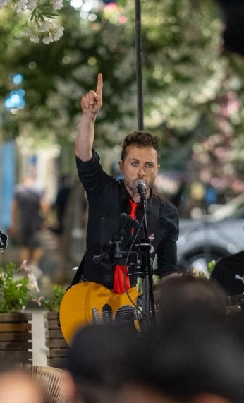

Tutte le opzioni sono mostrate esattamente nel riquadro 4:4.5 con la sfumatura scura inferiore della Home

C'è troppo cielo in alto, per cui viso e busto scivolano verso il basso finendo sotto la sfumatura.
Tolto lo spazio vuoto in cima. Il viso sale nella metà superiore, la cravatta e la chitarra sono visibili e la mano alzata resta tutta inquadrata.
Marco ancora più in alto e ravvicinato: viso centrato nella fascia alta, massima presenza ed espressione in risalto.
Spostamento intermedio verso il basso dell'inquadratura per alzare il busto.